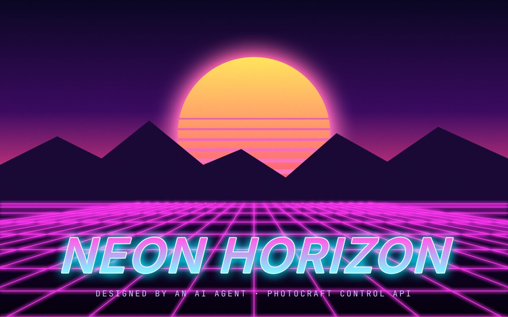

In the library
A new source, Made by a model, lists every picture a model generated. The card says which provider made it.
All sourcesAttachmentsMade by a modelDownloads

a-neon-horizon-over-a-desert-city-at-dusk.pngGenerated · Codex · 1.5 MB